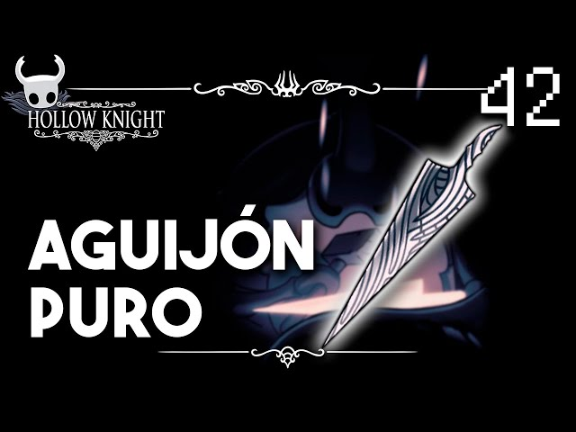

HOLLOW KNIGHT
Hollow knight es un videojuego indie que cuenta la historia de un caballero que esta vacio por dentro ya que dentro de el solo avita la sombra de su alma, se nos cuenta la historia sobre como este caballerito se va dando cuenta de su mision durante su viaje, se nos presentan varios personajes secundarios los cuales seran interactivos durante la historia y algunos de ellos presentaran peleas asi como otros nos daran su ayuda incondicional, el objetivo principal del juego es liberar al reyno de una infeccion que perjudica la vida en todo el reyno, poco a poco se dara cuenta junto con sus avances de su historia pasada.

Herramientas
En este juego tenemos varias herramientas claves asi como herramientas secundarias, estas se dividen en dos a mi parecer ya que dentro del juego hay algunas que son "opcionales" ya que no son necesarias para terminar el juego, mas sin embargo es rocomendable conseguirlas todas para el ENDGAME ya que facilita las peleas finales.
 Ver todos los finales
Ver todos los finales
Herramientas principales
Aqui se daran ejemplo de algunas de las herramientras principales del juego:
| Herramienta | Tipo | Función |
|---|---|---|
| Aguijón | Arma | Combate |
| Capa de polilla | Habilidad | Movimiento |
| Garras de mantis | Objeto | Escalar |
Aguijon
El aguijon es el arma principal del caballerito.
Espiritu Vengador
Espiritu vengador es la primera habilidad.

Capa de polilla
Capa de polilla es el item que nos permitira poder hacer dash.

Garras de mantis
Las garras de mantis permiten escalar paredes.

Salto desolador
El salto desolador es un hechizo opcional.

Corazon de cristal
Habilidad indispensable de movimiento.

Aguijon onirico
Sin el aguijon onirico es imposible completar el juego.

Lagrima de isma
Permite nadar en acido.

Personajes secundarios
Hay varios personajes principales entre ellos la protagonista del juego SilkSong.

| Personaje | Descripción | Enlace |
|---|---|---|
| Hornet | Personaje secundario principal | DA CLICK AQUI |
| Quirrel | Acompaña al caballero durante el viaje | DA CLICK AQUI |
| Zote | Personaje narcisista | DA CLICK AQUI |
| Cornifer | Vendedor de mapas del reino | DA CLICK AQUI |
| Ciervocaminos | Transporte principal del caballerito | DA CLICK AQUI |